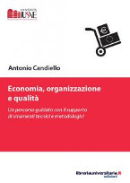
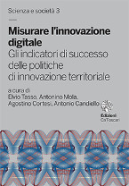

Antonio
Candiello
Innovazione e Visione tra Impresa ed Accademia ( IT version)
in english, please ...

Impresa e Consulenza: il supporto offerto all'impresa, arricchito di questi strumenti di conoscenza per l'innovazione, è incanalato nell'ambito di riconosciuti riferimenti normativi volontari e cogenti (qualità, ambiente, dati, responsabilità amministrativa), affiancato da una solida relazione con le principali comunità professionali trivenete e da una collaborazione con le maggiori Istituzioni formative del Nord Est, nonché garantito dall'esperienza diretta in azienda.
Scienza e Conoscenza: un percorso cognitivo avviato sulla base di solide basi scientifiche grazie agli studi in fisica, elevato con il conseguimento del PhD verso le più astratte strutture logiche e formali (teorie di grande unificazione, gravità, high energy physics) viene consolidato con diversi approfondimenti in discipline collaterali (algebra, chimica, scienze ambientali, astrofisica) ed arricchito dalla conoscenza ventennale strutturata e ad ampio raggio dell'informatica, ambito che attualmente presidio maggiormente.
Attività Offerta: consulenza/supporto su Information Technology (IT) Governance, indicatori (key performance indicators, KPI), gestione servizi a SLA (service level agreements), certificazione di qualità, IT service management, sicurezza informatica ed ambiente(schemi Iso9000, Iso20000, Iso 27000, Iso14000); audit e monitoraggio dei processi (Iso 19011); preparazione e conduzione di progetti di innovazione finanziati nazionali, regionali, europei; ricerca nell'innovazione di processo e di prodotto; supporto al social media marketing; technical and scientific publishing; formazione professionale e dissemination (informatica, sistemi di gestione qualità, ambiente, IT service management, processi di innovazione).
Libri

Economia, organizzazione e qualità
Un percorso guidato con il supporto di strumenti tecnici e metodologici
di Antonio Candiello
Acquista: Libreria Universitaria Edizioni, Padova, 2016

Misurare l’innovazione digitale
Gli indicatori di successo delle politiche di innovazione territoriale
di Elvio Tasso, Antonino Mola, Agostino Cortesi ed Antonio Candiello
Scarica il pdf: Ca' Foscari Editore, Venezia, 2015

Donne e Tecnologie Informatiche
Un approfondimento quantitativo e qualitativo del gender gap esistente nelle ICT attraverso dati statistici, analisi del web, rapporti ufficiali, norme e politiche, con particolare attenzione alla realtà del Veneto
di Emanuela Boschetto, Antonio Candiello, Agostino Cortesi e Fabio Fignani
Scarica il pdf: Ca' Foscari Editore, Venezia, 2012

Socialità in Movimento
Collezione di prospettive e voci sui giovani del Miranese e della Riviera del Brenta a partire dall´esperienza progettuale J-Step
di Antonio Candiello ed Andrea Marella
Acquista: Cleup Editore o Scarica il pdf: Quaderni del Master, Polisdoc, Università di Padova, Padova, 2011

Qualità e tecnologie informatiche per l’innovazione nelle PMI
Un modello integrato di gestione tra strumenti e comunità professionali
di Antonio Candiello
Acquista: Franco Angeli Editore, Milano, 2006

Laboratorio Marghera tra Venezia ed il Nord Est
La giurisprudenza ambientale, la partecipazione attiva dei cittadini, bonifiche e prospettive di sviluppo
di Nicoletta Benatelli, Anthony Candiello, Gianni Favarato
Acquista: Nuova Dimensione Editore, Venezia, 2006
Pubblicazioni

Articoli Scientifici e Professionali
in Informatica, Qualità/Ambiente e Fisica Fondamentale
- Fusione nucleare per la produzione di energia: : a che punto siamo?, A.C., articolo nella rivista Qualità, N.1, gennaio/febbraio 2019, pp.29-31;
- Fusione nucleare per la produzione di energia: sogno o realtà?, A.C., articolo sulla newsletter di ALEA (Associazione Laureati in Economia Aziendale), numero di dicembre 2018;
- Marghera a 100 anni dalla sua fondazione: emendare il passato e gestire il complesso presente per costruire un futuro migliore, A.C., articolo su Kaleidos, rivista dell'Università Popolare di Mestre, N.33, maggio-agosto 2018, pagg.20-22;
- Quando a Marghera si è rischiata una strage chimica, di Marco De Vidi, intervista su Motherboard Vice, 20 settembre 2017;
- Governare il cambiamento nell’era dell’incertezza con l’aiuto dell’innovazione: Con il digitale e oltre, verso l’industria 4.0, passando per IoT, AI, AR/VR, Cloud Computing & Big Data, A.C., articolo sul magazine online di informazione manageriale Leadership & Management, 20 settembre 2017;
- Il digitale trasforma la fabbrica: la prossima rivoluzione logistica e manifatturiera di Industria 4.0, A.C., articolo sulla newsletter di ALEA (Associazione Laureati in Economia Aziendale), numero di settembre 2017;
- Scenari di un futuro prossimo: dopo l’informatica, verso la robotica, passando per l’intelligenza artificiale e l’industria 4.0, A.C., articolo su Kaleidos, rivista dell'Università Popolare di Mestre, N.31, settembre 2017, pp.12-14;
- Lo sviluppo delle competenze digitali nella PA locale del Veneto, di Lorenzo Gubian, Valeria Vonghia, Antonino Mola e A.C., articolo nella rivista Qualità, N.4 luglio/agosto 2017, speciale Big Data e Open Data, pp.26-37;
- Infrastrutture ‘smart & green’ per disinnescare l’emergenza ambientale, A.C., articolo nella rivista Qualità, N.1, gennaio/febbraio 2017, numero speciale Ambiente & Green Economy pp.8-15;
- Porto Marghera dopo 100 anni: a che punto siamo con le bonifiche?, A.C. e Vera Cantale, articolo nella rivista Qualità, N.1, gennaio/febbraio 2017, numero speciale Ambiente & Green Economy, pp.4-7;
- Economia e qualità: elementi per una cultura di base, A.C., articolo nella rivista Qualità, N.6, novembre/dicembre 2016, pp.43-46;
- Emergenza climatica ed inquinamento locale: da rischio ad opportunità per una trasformazione del Nord Est, A.C., articolo nella rivista dell’associazione CGIA di Mestre, Veneto Nordest n.45, maggio 2016;
- Misurare l’innovazione digitale, eBook a cura di di Elvio Tasso, Antonino Mola, Agostino Cortesi, A.C., pp.1-195, Edizioni Ca’ Foscari, Venezia, 2015, ISBN 978-88-97735-89-2;
- Analisi dei Requisiti e Specifiche Tecniche, pp.1-73, Indicatori, Definizioni e primo set, pp. 1-71, Progettazione / Allegato Tecnico, pp.1-55, a cura di A.C., deliverabili D1s, D1i, D1p al 25/2/2014 del Progetto Regionale SmeD, Smart eGovernment Dashboard;
- Documento di valutazione e sperimentazione, pp.1-99, a cura di A.C., deliverable D2 al 31/10/2013 del Progetto Regionale SmeD, Smart eGovernment Dashboard;
- LHC e la Big Science come modello. Mega-Reti ed Infrastrutture Scientifiche Pan-Europee: le costituende fondamenta per la società e l’economia dei prossimi anni, pp.13-65, A.C., contributo in F. Azzariti (a cura di) "Connessioni", Franco Angeli, Milano, 2014;
- Analysis and Conclusions regarding Public Authority — Research Infrastructure Interaction. The business models for ICT Research Infrastructures, A. Hoogerwerf (a cura di), Piet Demeester, Colin Wright, A.C., Alan Mathewson (contributori), deliverable D4.2 al 30/6/2012 del Progetto Europeo FP7-ICT-248295 OSIRIS, Towards an Open and Sustainable ICT Research Infrastructure Strategy;
- Donne e Tecnologie Informatiche, libro di Emanuela Boschetto, A.C., Agostino Cortesi e Fabio Fignani, pp.1-144, Edizioni Ca’ Foscari, Venezia, 2012, ISBN 978-88-97735-02-1;
- Model for Public Authority — Research Infrastructure Interaction. The business models for ICT Research Infrastructures, A. Hoogerwerf (a cura di), Rosette Vandenbroucke, Piet Demeester, Colin Wright, A.C., Luc De Ridder, Musa Cağlar, Alan Mathewson (contributori), deliverable D4.1 al 31/3/2012 del Progetto Europeo FP7-ICT-248295 OSIRIS, Towards an Open and Sustainable ICT Research Infrastructure Strategy;
- Report on Interviews and collection of detailed information, A. Mathewson e C. O’Murchu (a cura di), P. Deemester, P. Van Daele, R. Vandenbrouck, L. de Ridder, A.C., A. Mathewson, C. O’Murchu, C. Wright (contributori), pp.1-83, deliverabile D3.3 al 30/6/2012 del Progetto Europeo FP7-ICT-248295 OSIRIS, Towards an Open and Sustainable ICT Research Infrastructure Strategy;
- Mapping of existing PA-RI Cooperations, A.C., deliverable D3.4 al 31/05/2012 del Progetto Europeo FP7-ICT-248295 OSIRIS, Towards an Open and Sustainable ICT Research Infrastructure Strategy;
- Inventory of existing PA-RIs cooperation – Update: Intro, Part-1, Part-2, A.C. e Mirco Mazzucato, deliverable D3.2 al 30/11/2011 del Progetto Europeo FP7-ICT-248295 OSIRIS, Towards an Open and Sustainable ICT Research Infrastructure Strategy;
- KPIs from Web Agents for Policies' Impact Analysis and Products' Brand Assessment, A.C. e A. Cortesi, proceedings CISIM 2011: Computer Information Systems: Analysis and Technologies, in CCIS vol. 245, pp. 192-201, Springer-Verlag, Heidelberg, 2011;
- KPI-Supported PDCA Model for Innovation Policy Management in Local Government, A.C. e A. Cortesi, EGOV2011, Lecture Notes in Computer Science 6846, pagg. 320-331, Springer, Heidelberg, 2011;
- Quality and Impact Monitoring for Local eGovernment Services, A.C., A. Albarelli e A. Cortesi, Journal Transforming Government: People, Process and Policy, vol.6(1), p. 112-125, Emerald Ed. (ISSN: 1750-6166), doi: 10.1108/175061612112148592 012;
- Inventory of existing PA-RIs cooperation, A.C. e Mirco Mazzucato (a cura di), Baiba Kaškina, Géza Ódor, Colin Wright, Arno Hoogerwerf, Rosette Vandenbroucke, Felix Cincarevsky (contributori) deliverable D3.1 al 31/12/2010 del Progetto Europeo FP7-ICT-248295 OSIRIS, Towards an Open and Sustainable ICT Research Infrastructure Strategy;
- Socialità in movimento: collezione di prospettive e voci dal territorio del Miranese e della Riviera del Brenta a partire dall’esperienza progettuale J-Step, libro a cura di A.C. e Andrea Marella, pp.1-176, Quaderni dell’Associazione M.A.S.Ter., Università di Padova, Cleup, Padova, 2011;
- Clima, Energia & Green Economy: dall’emergenza ambientale ad una leva per lo sviluppo ed occasione per nuovi business delle PMI italiane, A.C., articolo in Veneto, Economia & Società, rivista dell’associazione CGIA di Mestre, n.29, II quadrimestre 2010, pagg.131-145;
- Green Computing, A.C. e Michele Michelotto, articolo in ICT Security, N.81, Aprile 2010, pagg.46-51;
- Consegna del prototipo di eGovernment Intelligence, A.C., deliverable D4 al 31/03/2011 del Progetto Regionale eGovernment Intelligence, pagg.1-31;
- Documento di analisi e progettazione, A.C., deliverable D3 al 20/12/2010 del Progetto Regionale eGovernment Intelligence, pagg.1-40;
- Versione definitiva del modello strutturale, A.C., deliverable D2.2 al 31/03/2011 del Progetto Regionale eGovernment Intelligence, pagg.1-37;
- Prima bozza del modello strutturale, A.C., deliverable D2.1 al 30/09/2010 del Progetto Regionale eGovernment Intelligence, pagg.1-24;
- Creazione di una mappa degli indicatori, A.C., deliverable D1 al 31/03/2011 del Progetto Regionale eGovernment Intelligence, pagg.1-68;
- La QoS a tre livelli per i Servizi Web di eGovernment, A.C., A. Albarelli e A. Cortesi, terzo capitolo, pagg.169-189, in: AA.VV., Processi condivisi e sistemi aperti per un egovernment partecipato – L’esperienza della Regione Veneto nella promozione della società dell’informazione e della conoscenza tra enti locali, imprese, cittadini e territorio, Università “Ca’ Foscari” Editore, Venezia, 2010, ISBN 978 88 903433 1 5;
- Three-layered QoS for eGovernment Web Services, A.C., A. Albarelli e A. Cortesi, in: P. Agouris, C. Baru, R. Sandoval, proceedings of the 11th International Conference in Digital Government Research DGO 2010, ACM digital library, May 17-20, 2010, Puebla, Mexico (“Second Best Paper Award” della conferenza);
- Report on key challenges based on previous studies, Bruno Martuzāns, Baiba Kaškina, Katrīna Sataki, A.C., Helmut Sverenyák, Arno Hoogerwerf, Jan Hrušák, Jarmila Tiosavljevičová, Musa Çağlar, Colin Wright, 1/4/2010, pagg.1-42deliverabile D2.1 del Progetto Europeo FP7-ICT-248295 OSIRIS, Towards an Open and Sustainable ICT Research Infrastructure Strategy;
- Business Process Management. Tecniche di Bpm/Workflow a supporto dei processi in un modello di IT "flessibile" per la Pubblica Amministrazione Locale, A.C., S. Vianello, A. Cortesi, A. Mola, E. Tasso, B. Salomoni, articolo su “Qualità”, numero speciale “Informatica e Qualità. La Società dell’Informazione”, pagg.11-17, Settembre/Ottobre 2010;
- Documento di accompagnamento del prototipo, A.C. con il contributo di C. Destro, E. Massolin e S. Vianello, deliverable D1 al 31/03/2011 del Progetto Regionale Indagine e sperimentazione su nuovi strumenti di interazione con il cittadino per il miglioramento della qualità dei servizi, pagg.1-51;
- Inquinamento e danni alla salute. Un cambiamento è urgente nel nostro modello di vita, A.C., contributo, sesta sezione, pagg.135-165 in: Benatelli, N. (a cura di), Quaderno della Consulta per la Tutela della Salute N.5/2009, “Assistenza primaria, welfare di comunità, centralità della persona. Prospettive di sviluppo dei servizi socio sanitari a Venezia”, Comune di Venezia, 2009;
- Rete per l'umanizzazione, rete di prossimità. Una inchiesta sui bisogni di salute, A.C. e Olmo Tarantino, contributo, quarta sezione, pagg.68-86 in: Benatelli, N. (a cura di), Quaderno della Consulta per la Tutela della Salute N.5/2009, “Assistenza primaria, welfare di comunità, centralità della persona. Prospettive di sviluppo dei servizi socio sanitari a Venezia”, Comune di Venezia, 2009;
- Un approccio per processi per un eGovernment di qualità – Le sperimentazioni del Laboratorio Veneto per l’eGovernment finalizzate per accrescere la qualità dei servizi al cittadino, A.C., A. Albarelli, A. Cortesi, A. Mola, E. Tasso, B. Salomoni, articolo proposto (poi non pubblicato) per lo speciale Qualità del periodico di Confindustria Trentino, Ottobre 2009;
- Qualità nell’eGovernment Locale – Gli sviluppi sul tema della qualità dei servizi pubblici al cittadino del Laboratorio di eGovernment Veneto, A.C., A. Albarelli, A. Cortesi, A. Mola, E. Tasso, B. Salomoni, articolo su Qualità, AICQ, Milano, Settembre 2009;
- Weak Identities for Deliberative e-Democracy, A.C., A. Albarelli, A. Cortesi, in: Tambouris, E., Macintosh A. (Eds.). Electronic Participation: Proceedings of Ongoing Research, General Development Issues and Projects of ePart 2009, 1st International Conference, Linz, Austria, September 1-3, 2009 Trauner Druck: Linz, Schriftenreihe Informatik # 31, 2009;
- Advanced Quality Tools for eGovernment Services, A.C., A. Albarelli, A. Cortesi, in: Marco Winckler, Monique Noirhomme-Fraiture, Dominique Scapin, Gaelle Calvary and Audrey Serna (Eds.). Proceedings of the 2nd International Workshop on Design and Evaluation of e-Government Applications and Services (DEGAS'2009) in conjunction with INTERACT'2009, Uppsala, Sweden, August 24th 2009;
- Final EGI Function Definition, deliverabile D3.2 del Progetto Europeo FP7 IST 211693 Grid Initiative Design Study (EGI_DS), (Chapter 8 "Management"), 5/5/2009;
- A business model for the establishment of the European Grid Infrastructure, A.C., D. Cresti, T. Ferrari, F. Karagiannis, D. Kranzlmueller, P. Louridas , M. Mazzucato, L. Matyska, L. Perini, K. Schauerhammer, K. Ullmann, M. Wilson, in the Proceedings of the 17th Int. Conference on Computing in High Energy and Nuclear Physics (CHEP 2009), Prague, CZ, Int. Journal of Physics Conference Series 219(6) 2009;
- European Grid Initiative (EGI) Blueprint, deliverabile D5.3 del Progetto Europeo FP7 IST 211693 Grid Initiative Design Study (EGI_DS) (contributo alla stesura), 22/12/2008;
- An Ontology-based Inquiry Tool, A.C., A. Albarelli, A. Cortesi, In Proceedings of the 5th Workshop on Semantic Web Applications and Perspectives (SWAP2008), Rome, Italy, December 15-17, 2008, CEUR Workshop Proceedings, ISSN 1613-0073;
- La rinascita possibile di una Marghera impossibile. L’industria chimica, la pesante eredità ambientale, l’impegno della comunità cittadina, il quadro attuale e … quale futuro?, contributo in S. Barizza (a cura di), “Marghera 2009 dopo l’industrializzazione”, Auser, 2009;
- Dal ciclo del cloro allo smog. Come proteggere la salute – la mappa dell’inquinamento veneziano, A.C., capitolo in Benatelli, N. (a cura di), Quaderno della Consulta per la Tutela della Salute N.1/2008, “Prevenzione e tutela della salute pubblica. Raccomandazioni ed interventi globali contro le malattie degenerative”, Comune di Venezia, 2008;
- EGI Functions: First Definition, deliverabile D3.1 del Progetto Europeo FP7 IST 211693 Grid Initiative Design Study (EGI_DS), contributo alla stesura, 12/9/2008;
- Nuovi modelli dell’ICT – Web 2.0 e oltre. Web 2.0, web semantico, grid computing, virtualizzazione … un’opportunità per le imprese strutturate, A.C., articolo su Qualità, Settembre 2008;
- Il grid computing parla italiano, A.C., sul blog “Firstdraft”, marzo 2008;
- Le tecnologie ICT: strumento e complemento dei sistemi di gestione aziendali, A.C. ed Alberto Bobbo, articolo in Qualità, marzo/aprile 2008;
- La definizione di un framework di gestione multicanale per la rilevazione della soddisfazione degli utenti, A.C. e Francesco Brocchi, resoconto di un progetto di ricerca, capitolo in “Citizens iTV: un modello regionale di servizi ai cittadini attraverso la televisione digitale terrestre”, Franco Angeli, Milano, 2007;
- Le “tante dualità” d’intervento di scienza e tecnologia e nel sostegno ai processi d’innovazione, capitolo in Azzariti, F. (a cura di), "La tecnologia al potere", Feltrinelli, Milano, 2007;
- La rinascita della comunità cittadina di Marghera. Il percorso di impegno civile innescato dall’emergenza chimica, contributo in Barizza S. e Cesco L. (a cura di) “Marghera 1917-2007. Voci, suoni e luci tra case e fabbriche”, Comunicare & Stampa, Marghera, 2007;
- Il Caos, A.C., capitolo di apertura (pagg.21-40), in Azzariti, F. (a cura di), “Il Caos: nuova regola di mercato”, FrancoAngeli, Milano, 2006;
- I dati per l’impresa: una bussola per indirizzare il miglioramento, articolo su Qualità (speciale: “Economia e Qualità”), anno XXXVI, Novembre/Dicembre 2005, pagg. 30-36, Aicq, Milano;
- I flussi informativi come strumento primario di supporto alla gestione dell'impresa, articolo su Sistemi & Impresa, Novembre 2005, pagg. 27-33, Este, Milano;
- Vision 2000 ed informatica: un sistema sinergico di supporto alle imprese orientate ai processi, articolo su Sistemi & Impresa N.8, Ottobre 2004, pagg. 87-92, Este, Milano;
- Le tecnologie informatiche come strumenti abilitanti per il sistema di gestione della qualità - Portali, workflow, moduli elettronici, software specializzati; ecco come l’informatica può semplificare il soddisfacimento dei requisiti Iso 9001:2000, articolo su Qualità, anno XXXIV n.6, Agosto/Settembre 2004, pagg.14-22;
- Grid Computing – L’informatica come public utility del calcolo: oltre il web, verso un moderno modello economico di servizio, articolo su Sistemi e Impresa N.4, Maggio 2004, pagg. 118-122;
- Qualità nel software – Standard nell’informatica e metriche nel software: una panoramica, articolo su Sistemi e Impresa N.1, Gennaio/Febbraio 2004, pagg. 87-90;
- WBase: a C package to reduce tensor products of Lie algebra representations. Description and new developments, A.C., pubblicato nei Proceedings of the Fourth International Workshop on Software Engineering, Artificial Intelligence and Expert Systems for High Energy and Nuclear Physics, “New Computing Techniques in Physics Research IV”, ed. B. Denby and D. Perret-Gallix, 1995 World Scientific;
- Anomalie e Supergravità Effettiva nella Stringa Eterotica di Green-Schwarz, A.C., tesi di dottorato (PhD thesis), Università degli Studi di Firenze, Biblioteca Nazionale Universitaria, Marzo 1994;
- k-anomalies and space-time supersymmetry in the Green-Schwarz heterotic superstring, A.C., K. Lechner e M. Tonin, articolo su Nucl. Phys. B438 (1995) 67-108;
- The Supersymmetric Version of the Green-Schwarz Anomaly Cancellation Mechanism, A.C. e K. Lechner, articolo su Phys. Lett. B332 (1994) 71-76;
- WBase: a C package to reduce tensor products of Lie algebra representations, A.C., articolo su Comput. Phys. Comm. 81 (1994) 248-260;
- Duality in Supergravity Theories, A.C. e K. Lechner, articolo su Nucl. Phys. B412 (1994) 479-501;
- Modelli di Superparticella e di Superstringa e loro Quantizzazione Covariante, A.C., tesi di laurea, luglio 1991.
Formazione e Comunicazione

Relazioni, Docenze e Seminari in ambito Scientifico, Formativo e Professionale
- Bilancio della Campagna 2018-19 e programma 2019-20, presentazione all’evento Veneto eLeadership 2019 per lo sviluppo delle competenze digitali nella PA, 28 marzo 2019, SMAU Padova;
- Cybersecurity nella PA, conduzione della tavola rotonda all’evento Cybersecurity e Risk Management, 15 febbraio 2019, Comune di Padova;
- Esperienze concrete del processo di dematerializzazione degli Enti Locali, conduzione della tavola rotonda all’evento Dematerializzazione: come gestire un sistema 100% digitale. Le problematiche di conservazione a norma e di archiviazione digitale, 6 dicembre 2018, Comune di Verona;
- Esperienze nell’implementazione del SIT; commenti e riflessioni, conduzione della tavola rotonda all’evento Il database territoriale: da obbligo ad opportunità, 15 novembre 2018, Comune di Vicenza;
- Conduzione del dibattito all’evento Applicazione Codice Appalti ed Acquisti ICT: prossimi adempimenti>, 25 ottobre 2018, Comune di Padova;
- Il Responsabile per la Transizione Digitale: esperienze a confronto>, conduzione della tavola rotonda all’evento Il ruolo del Responsabile per la Transizione Digitale (RTD): basi normative / programmatiche (CAD & Piano Triennale) ed esperienze concrete>, 12 ottobre 2018, Provincia di Treviso;
- Sviluppo delle Competenze Digitali per la PA, coordinamento del percorso annuale di formazione “tra pari” per gli enti locali del Veneto a guida regionale, iterazioni 2018/19 e 2017/18 strutturato in oltre dieci gruppi (GdA) ed incontri (IdA) tematici mensili, argomenti: Codice Amministrazione Digitale, Sicurezza Informatica, SPID & EIDAS, Open Source, Privacy & GDPR, Acquisti ICT, Sistemi Informativi Territoriali, Amministrazione Trasparente, Pagamenti Digitali, Conservazione Digitale, Mobilità, Sociale, Service Design, URP e Accessibilità;
- Il modello strategico del sistema informativo della PA: le infrastrutture fisiche, la conservazione e la sicurezza, docenza professionale di 16 ore (4 sessioni da 4) per l’Ente Formazione Artigiana, destinatari i Comuni di Abano, Torreglia e Teolo, c/o Comune di Abano, 5/4/2018, 24/4/2018, 10/5/2018, 21/5/2018;
- Laboratorio dei servizi innovativi: Economia 4.0, ciclo di conferenze (24 ore complessive) per il Dipartimento di Scienze Politiche, Giuridiche e Studi Internazionali dell’Università di Padova c/o Confartigianato Vicenza, 23/4/2018, 2/5/2018, 8/5/2018;
- Bar Camp: Economia e innovazione tecnologica. Digital Transformation, sistemi smart, cloud computing e big data, docenza seminariale di 4 ore per l’Istituto Universitario Salesiano Venezia, 5 aprile 2018;
- Big Data, Economia 4.0 e gestione dei Servizi, docenza professionale di 28 ore (sette sessioni da 4) nel corso “Industria 4.0” per ECIPA, destinatari responsabili e dipendenti di CNA Venezia (6/4/2018), Padova (18/1/2018, 26/1/2018, 28/3/2018), Treviso (23/2/2018), Vicenza (2/3/2018) e Rovigo (27/4/2018);
- Open Data e Big Data, docenza professionale di 96 ore (12 sessioni da 8) nell’ambito del corso “PA (R)EVOLUTION” per CUOA Business School, destinatari dirigenti e dipendenti comunali, presso: sede Cuoa ad Altavilla Vicentina (23/1/2018, 29/1/2018, 31/1/2018, 6/2/2018), Comune di Bassano (12/2/2018, 19/2/2018), Comune di Schio (22/2/2018, 1/3/2018), Comune di Padova (27/2/2018, 8/3/2018), Comune di Verona (7/3/2018, 15/3/2018);
- Open Data e Big Data, docenza professionale di 48 ore (6 sessioni da 8) per le Camere di Commercio (Venezia/Rovigo, Padova, Verona) nel corso “CAMERE 4.0” per CUOA Business School, Camera di Commercio di Venezia e Rovigo (7/2/2018, 5/3/2018), Camera di Commercio di Padova (+ Vicenza, 28/2/2018, 13/3/2018), Camera di Commercio di Verona (6/3/2018, 20/3/2018);
- Esperienze nell’adeguamento al GDPR; commenti e riflessioni, conduzione della tavola rotonda all’evento Regolamento Europeo sulla Privacy: novità, aspetti critici, proposte e soluzioni, 19 gennaio 2018, Sala Polifunzionale, Palazzo della Regione, Regione Veneto;
- Cloud Computing, animazione del tavolo di lavoro nell’ambito del workshop del progetto PA (R)EVOLUTION, 21 dicembre 2017, CUOA Business School, Altavilla Vicentina, Vicenza;
- Le misure minime di sicurezza ICT stabilite dall’AGID e le misure di sicurezza per la protezione dei dati, relazione al seminario Kairós: Il nuovo regolamento europeo in materia di protezione dei dati personali e gli obblighi per le amministrazioni pubbliche, 1 dicembre 2017, Centro Conferenze Camera di Commercio, Padova;
- Percorsi di integrazione di SPID: quali le sfide da affrontare?, conduzione della tavola rotonda all’evento SPID e Identità Digitale>, 7 dicembre 2017, Sala Verde, Comune di Treviso;
- Esperienze di gestione della Sicurezza Informatica negli Enti Locali, conduzione della tavola rotonda all’evento Aggiornamenti sul quadro normativo relativo alla Sicurezza Informatica per la Pubblica Amministrazione, 19 ottobre 2017, Palazzo Moroni, Comune di Padova;
- Il Piano Triennale per l’Informatica nella PA 2017-2019 in sintesi, presentazione agli eventi Codice Amministrazione Digitale a fronte del nuovo Piano Triennale per l'Informatica nella PA, Vicenza, 5 luglio 2017 (sessione seminariale) e all’21 settembre 2017 (sessione pubblica);
- La sfida delle nuove competenze digitali per la PA locale, presentazione all’evento Veneto e-Leadership per lo sviluppo delle competenze digitali nella PA, Sala Polifunzionale del Palazzo della Regione, 11 maggio 2017;
- Economia e Organizzazione Aziendale, docenza universitaria al terzo anno di Scienze e Tecniche della Comunicazione Grafica e Multimediale per complessivi 5 crediti (40 ore), IUSVE–STC, A.A. 2018/19, 2017/18, 2016/17, 2016/15, 2014/2015;
- Focus (approfondimenti) in forma di sessioni universitarie seminariali a IUSVE con gli studenti: Industria 4.0 e Robot: la fine del lavoro?, 26/10/2017; 100 anni di Porto Marghera: quale bilancio e quale futuro?, 8/11/2017;
- Focus (approfondimenti) in forma di sessioni universitarie seminariali a IUSVE con gli studenti:Economia, Innovazione e Tecnologia: La trasformazione delle produzioni su piccola scala grazie al digitale, 16/11/2016, Economia e tecnologia sostenibile tra auto elettriche e energie rinnovabili, 23/11/2016, Viaggio verso le nuove frontiere delle tecnologie digitali: digital transformation e realtà aumentata, 30/11/2016; Innovazione, Economia & Organizzazione, 29/10/2015
- Donne e Tecnologie Informatiche: Un approfondimento quantitativo e qualitativo del gender gap esistente nelle ICT attraverso dati statistici, analisi del web, rapporti ufficiali, norme e politiche, con particolare attenzione alla realtà del Veneto, sessioni di presentazione del testo: 28 maggio 2013, ForumPA, Roma; 29 maggio 2012, Ca’ Foscari, Aula Baratto, Venezia;
- Stelle & Pianeti, presentazione divulgativa alla Scuola Elementare "Mario Licio Visintini", Marghera, 14 Maggio 2012;
- OSIRIS Brief introduction – Understanding RIs – Open and sustainable ICT RIs strategy – Results up to present, presentazione scientifica at the Impact of e-Infrastructures: Assessment Methodologies Session during EGI Community Forum, Monaco, Germania, 29 Marzo 2012;
- OSIRIS Presentation, partecipazione e discussione in qualità di OSIRIS partner al Research Infrastructures Concertation Meeting, 22-23 Settembre 2011, Lyon;
- KPI-Supported PDCA Model for Innovation Policy Management in Local Government, presentazione scientifica alla Conferenza Internazionale EGOV2011, 29 Agosto – 2 Settembre 2011, Delft (Olanda);
- Strumenti Open Source per l’eGovernment, presentazione scientifica presso il Dipartimento di Scienze Ambientali, Informatica e Statistica, ciclo di conferenze “OS piattaforma di sviluppo per Applicazioni Onlus e non solo”, 20 Aprile 2011;
- ICT Research Infrastructures: Interviews, co-conduzione degli OSIRIS European Interviews Meetings: 25 Agosto 2011, Leuven, Belgio (IMEC); 19 Settembre 2011, Lyon, Francia (EGI); 29 Settembre 2011, Amsterdam, Olanda (LIFEWATCH), 6 Ottobre 2011, Cambridge, UK (Dante/Géant), 30 Novembre 2011, Grenoble, Francia (Minatec-CEA/LETI);
- OSIRIS European Project Meetings: co-conduzione in qualità di OSIRIS WP3 “Benchmarking” Leader: 26-27 Aprile 2010, The Hague (NL), 30 Settembre 2010, Bruxelles (BE); 10/11 Febbraio 2011, Praga (CZ); 7/8 Aprile 2011, Leuven (BE); 27/28 Aprile 2011, Brugge (BE), 27 Maggio 2011, Bruxelles (BE), 17 Ottobre 2011, Bruxelles (BE), 13/14 Dicembre 2011, Bruxelles (BE), 20/21 Febbraio 2012, Bruxelles (BE), 3/4 Aprile 2012, Padova (IT), 18/19 Aprile 2012, Bruxelles (BE), 31 Maggio/1/Giugno 2012, Bruxelles (IT);
- Tecnologie Informatiche per la PA. eGovernment Intelligence, presentazione scientifica alla Conferenza Provinciale Permanente. Seminario per la presentazione progetti di Innovazione e qualità dei Servizi, Prefettura di Belluno, 18/11/2010;
- PA & OpenSource. Progetti di Ricerca, presentazione scientifica al convegno PA & Open Source: un percorso tra opportunità ed innovazione, Parco Scientifico VEGA, Marghera, Venezia, 11/11/2010;
- eGovernment Intelligence, presentazione scientifica alla Conferenza Provinciale Permanente. Prefettura di Belluno, 15/10/2010;
- Scenari – Green Economy, presentazione scientifica al convegno “Diritto ed Economia Verde – Globalizzazione e prospettive territoriali: incontro con gli stakeholders per approfondire e capire”, Rovigo, 15/7/2010, Villa Molin Avezzù Pignatelli;
- LHC e la Big Science come modello: Mega-Reti ed Infrastrutture Scientifiche Pan-Europee: le costituende fondamenta per la società e l’economia dei prossimi anni, presentazione scientifica di apertura dell’VIII Salone d'Impresa, 25/06/2010, Mestre-Venezia;
- Marghera 2009 dopo l’industrializzazione, presentazione del libro (come coautore), Biblioteca di Marghera, 9/10/2009;
- Weak Identities for Deliberative e-Democracy, presentazione scientifica, Electronic Participation: Proceedings of Ongoing Research, General Development Issues and Projects of ePart 2009, 1st International Conference, ePart 2009, Linz, Austria, September 1-3, 2009;
- New industry perspectives emerging from the EGI model, presentazione scientifica all'EGEE User Forum + OGF25 + OGF.EU2, Centro “Le Ciminiere”, Catania, March 5th 2009;
- Fisica 2, docenza ed esercitazioni per la Laurea di primo livello in Matematica, A.A. 2008-2009, per complessivi 3,00 crediti, Facoltà di Scienze, Università di Padova;
- Ambiente e Salute a Venezia, Mestre e Marghera, presentazione in III Commissione Consiliare, Ca’ Farsetti, Venezia, mercoledì 20 maggio 2009;
- Ambiente e Salute a Venezia, Mestre e Marghera, lezione tenuta in Aula Magna dell’ITIS Zuccante, in qualità di Esperto per conto dell’Ufficio Programmazione Sanitaria del Comune di Venezia, lunedì 6 aprile 2009;
- Ambiente e Salute a Venezia, Mestre e Marghera, lezione tenuta in Aula Magna dell’Istituto Stefanini, in qualità di Esperto per conto dell’Ufficio Programmazione Sanitaria del Comune di Venezia, lunedì 23 aprile 2009;
- Environment and Health: Recent Developments in Europe, lezione all’Advanced, Training Program on Environmental Management and Sustainable Development, “Air Quality Control” – MEP 1, Venice International University, S. Servolo, Venezia, 17 febbraio 2009;
- Environment and Health: Recent Developments in Europe, lezione all’Advanced Training Program “Air Quality and Health” Ambiente/SICP - BMEPB 3, Venice International University, S. Servolo, Venezia, 21 novembre 2008;
- La mappa dell’inquinamento veneziano, presentazione divulgativa al Forum Cittadini: Quale Salute a Venezia?, Ca’ Farsetti, Venezia, giovedì 20 novembre 2008;
- eGovernment 2.0, presentazione scientifica al Lunch Seminar del Dipartimento di Informatica, Università “Ca’ Foscari” di Venezia, 25 giugno 2008;
- Marghera: un modello di sviluppo in discussione, un laboratorio per sperimentare nuovi percorsi, lezione al Master interateneo 2008 "Regolazione dello sviluppo locale", 6 giugno 2008, Università di Padova;
- Dal web 1.0 al web 3.0 passando per il web 2.0 … I progetti di ricerca nell’ambito del laboratorio, presentazione scientifica al Kick-Off meeting per il progetto Unive/Regione Veneto “Laboratorio per la gestione e lo sviluppo dei portali per il territorio”, Dipartimento di Informatica, Università “Ca’ Foscari” di Venezia, venerdì 29 febbraio 2008;
- Marghera: Evoluzione o Involuzione? Un modello di sviluppo in discussione, un laboratorio per ridisegnare il futuro, lezione al Liceo Scientifico Statale “U. Morin”, Mestre (Ve), lunedì 25 febbraio 2008;
- Dal World Wide Web alla Great Global Grid: risorse di calcolo più economiche, sicure e scalabili con le computing grid condivise, presentazione e discussione a: “Grid Computing, soluzioni innovative per le piccole e medie imprese”, BEinGRID/Sogea, Fornace di Asolo (Tv), venerdì 22 febbraio 2008;
- Il Sistema TEcnologico Partecipato (S.TE.P.) per l’informazione, la collaborazione e la comunicazione dei giovani della Riviera del Brenta e del Miranese, presentazione di avvio del progetto agli assessori di competenza, Sala Consiliare, Comune di Camponogara (Ve), giovedì 7 febbraio 2008;
- EGI Industry Take Up, presentazione scientifica al “European Grid Initiative WP3 Meeting”, Cern/Ginevra (Svizzera), giovedì 31 gennaio 2008;
- Il Caos: transizione alla casualità di un sistema deterministico, presentazione scientifica ad introduzione del IV Salone d’Impresa “Il Caos: nuova regola di mercato”, Villa Foscarini Rossi, Stra (Venezia), 31 marzo / 1 aprile 2006;
- L'Universo in Scatola: Breve Storia dell'Universo (A.C.) e Caleidoscopi Cosmici (Gianpietro Favaro), presentazione divulgativa per il Circolo Astrofili di Mestre, giovedì 30 Marzo 2006;
- Biostrutture, cristalli, nanostrutture e simmetrie della natura, presentazione divulgativa per il Circolo Astrofili di Mestre, venerdì 27 Gennaio 2006;
- I edizione del Premio Nazionale per la Responsabilità Sociale delle Imprese, componente della commissione scientifica dell’Università di Padova attiva a supporto della giuria istituzionale per la (con il patrocinio di Ministero del Lavoro e della Regione Veneto ed in collaborazione con la Camera di Commercio di Rovigo), Città di Rovigo, 13 Dicembre 2005.
- Vita, nascita e morte delle stelle, per il Circolo Astrofili di Mestre, venerdì 26 Novembre 2005;
- Ai Confini dell’Universo, presentazione divulgativa per il Circolo Astrofili di Mestre, Sabato 29 Marzo 2005;
- L’Universo in un Guscio di Noce: una libera rilettura del libro “Universe in a nutshell” di Hawking, presentazione divulgativa per il Circolo Astrofili di Mestre, sabato 13 Gennaio 2004;
- Real world software maintenance Reengineering experiences, partecipazione alla discussione del 6th Reengineering Forum, Palazzo degli Affari, Firenze, 8-11 Marzo 1998;
- Binary-Oscillatory Networks: Bridging a Gap between Experimental and Abstract Modeling of Neural Networks, presentazione scientifica al Journal Club, Scuola Internazionale Superiore di Studi Avanzati (SISSA) - Settore di Biofisica, Trieste, 18 Giugno 1996.
- C++ Programming Course in the Windows/Visual C++ Environment, docenza al Corso semestrale per studenti di PhD presso la Scuola Internazionale Superiore di Studi Avanzati (SISSA) - Settore di Biofisica, Trieste, marzo – luglio 1996;
- WBase: a C package to reduce tensor products of Lie algebra representations. Description and new developments, presentazione scientifica al Fourth International Workshop on Software Engineering and Artificial Intelligence for High Energy and Nuclear Physics (serie convegni AIHEP), Palazzo Congressi, Pisa, 3-8 Aprile 1995;
- Viaggi nel tempo, presentazione scientifica al Journal Club del Dipartimento di Fisica dell’Università di Padova, 7 Aprile 1993;
- Dualità e Supersimmetria in 10 dimensioni, presentazione scientifica al Congresso Nazionale di Fisica Teorica “Cortona '93”, Cortona, 9-12 Giugno 1993.

Relazioni a Convegni e Docenze per la Gestione d'Impresa
- Cloud Computing, animazione del tavolo di lavoro al workshop CUOA "PA (R)EVOLUTION: competenze e strumenti per l’open digital transformation delle Pubbliche Amministrazioni venete", 21 dicembre 2017, CUOA Business School, Altavilla Vicentina, Vicenza;
- Le misure minime di sicurezza ICT stabilite dall’AGID e le misure di sicurezza per la protezione dei dati, relazione al seminario Kairós: "Il nuovo regolamento europeo in materia di protezione dei dati personali e gli obblighi per le amministrazioni pubbliche", 1 dicembre 2017, Centro Conferenze Camera di Commercio, Padova;
- Sviluppo delle Competenze Digitali per la PA, coordinamento del percorso annuale di formazione “tra pari” per gli enti locali del Veneto a guida regionale, iterazione 2017, strutturato in circa dieci gruppi (GdA) ed incontri (IdA) tematici mensili, argomenti: Codice Amministrazione Digitale, Sicurezza Informatica, SPID & EIDAS, Open Source, Privacy & GDPR, Acquisti ICT, Sistemi Informativi Territoriali, Amministrazione Trasparente, Pagamenti Digitali
- Percorsi di integrazione di SPID: quali le sfide da affrontare?, conduzione della tavola rotonda all'evento "SPID e Identità Digitale", 7 dicembre 2017, Sala Verde, Comune di Treviso
- Esperienze di gestione della Sicurezza Informatica negli Enti Locali, conduzione della tavola rotonda all'evento "Aggiornamenti sul quadro normativo relativo alla Sicurezza Informatica per la Pubblica Amministrazione", 19 ottobre 2017, Palazzo Moroni, Comune di Padova
- Organizzazione aziendale & processi, docenza professionale per l’Istituto San Gaetano, Vicenza, 40 ore distribuite nell’A.S. 2013/2014, 2014/2015, 2015/2016;
- Totems! Meet business working together University & Research, presentazione e discussione al Salone delle MICROImprese, 30 novembre 2013, Palazzo della Borsa, Venezia;
- L’esperienza consapevole della comunità cittadina a Marghera, testimonianza all’evento "ll danno ambientale: soggetti, vittime e normative – Dark Economy a Nordest", 9 maggio 2013, IUAV, Ca’ Tron, Venezia;
- Innovazione digitale: ICT a supporto del business aziendale, relazione all’evento "Cloud Computing", 19 Aprile 2013, UNISEF, Auditorium Cassamarca, Treviso;
- Socialità in movimento: collezione di prospettive e voci dal territorio del Miranese e della Riviera del Brenta a partire dall’esperienza progettuale J-Step, roadshow di presentazione del testo, 24 Maggio 2012, Comune di Camponogara, 25 Maggio 2012, Comune di Venezia, Municipio di Mestre, 7 giugno 2012, Comune di Noale, 15 giugno 2012, Apindustria Padova;
- UFC #11 – Metodologia di sviluppo ed elementi di UML, docenza professionale (32 ore) nell’ambito del corso FSE “Java and Mobile Developer”, Marghera, maggio – luglio 2011;
- Cloud Computing, l’internet integrata del calcolo, presentazione e discussione al convegno Cloud Computing: la nuvola dell’informatica del nuovo millennio, Comune di Padova, 10 novembre 2010;
- Sviluppo, collaudo, installazione e configurazione del software, docenza professionale UFC di 50 ore nell’ambito del percorso IFTS con certificazione di IV livello europeo per “Tecnico superiore per lo sviluppo del software finalizzato alla valorizzazione e promozione turistica, culturale ed ambientale del territorio”, Itis C. Zuccante, Mestre, ottobre-novembre 2010;
- Web 2.0 per il Distretto SportSystem, presentazione e discussione con gli associati del distretto, Museo dello Scarpone, Montebelluna (Tv), 2/11/2009;
- Dal web 2.0 al web 3.0. Sistemi collaborativi, web semantico, ontologie …, presentazione e discussione al Salone d’Impresa, Stra (Venezia), 5 maggio 2008;
- Grid Computing, presentazione e discussione al Cenacolo per IT Manager, Salone d’Impresa, Sheraton Hotel, Padova, venerdì 25 gennaio 2008;
- Budget di commessa e tipologia di prodotto/servizio, docenza professionale per Kantea, c/o Logo Srl, Borgoricco (Pd), 11, 12, 13, 18, 20 dicembre 2007;
- La qualità e i sistemi informativi nell’evoluzione delle imprese, presentazione e discussione, in “Le imprese che imparano nel caos del mercato”, Apindustria Padova, sabato 17 novembre 2007, Hotel Villa Giulietta, Fiesso d’Artico (Ve);
- Project Management e strumenti IT, docenza professionale per Kantea, c/o Logo Srl, Borgoricco (Pd), 18, 25/9, 9, 16, 23/10 2007;
- Marketing per le Energie Rinnovabili, docenza professionale per Cesar, c/o Borsato Impianti Srl, Schio (Vi), 6, 7, 10, 12 settembre 2007;
- Marghera tra comunità urbana e sito industriale: un laboratorio di innovazione democratica, presentazione e successiva tavola rotonda, alla Summer School “Per un progetto di sviluppo glocale, scenari evolutivi sostenibili”, associazione M.A.S.TER, nell’ambito del Master in regolazione politica dello sviluppo locale, Università di Padova, 13 settembre 2007, Torreglia (Pd);
- Caso Studio: Porto Marghera, lezione al Master in “Regolazione politica dello sviluppo locale”, venerdì 25 maggio, Scienze Politiche, Università di Padova;
- Pianificazione e gestione della produzione: la commessa e i suoi elementi costitutivi, il prodotto, il servizio, il processo, due giornate di docenza professionale nell’ambito del corso FSE 002, Kantea, c/o Centro di Formazione Professionale “Pia Società San Gaetano”, Vicenza, 3 aprile e 18 maggio 2007;
- La tecnologia al potere? Come si cresce innovando efficacemente, attività di “discussant” al Quinto Salone d’Impresa, 29 marzo 2007, Villa Foscarini Rossi, Stra (Ve);
- Un Sistema Informatico per la somministrazione multicanale di questionari nella PA: eGovernment Inquiry Framework, presentazione al Workshop “Citizens iTV: stato avanzamento delle attività e sviluppi futuri”, 15 dicembre 2006, San Servolo c/o Venice University – Regione Veneto;
- Laboratorio Marghera, testimonianza sull’esperienza sociale di Marghera sui temi ambientali, in “Decrescita per il Veneto, un’idea per creare una nuova convivenza e tutelare beni comuni e democrazia“, 18 dicembre 2006, Mestre, Auditorium Provincia di Venezia;
- Il Caos? E’ la nuova regola di mercato!, partecipazione alla tavola rotonda nel “Cenacolo per Imprenditori”, Salone d’Impresa, Ristorante all’Amelia, Venerdì 9 febbraio 2007;
- Laboratorio Marghera tra Venezia e il Nord Est, ciclo di eventi di presentazione del libro: Mestre, Centro Santa Maria Le Grazie, 15 dicembre 2006; Venezia, Libreria Mondadori, 3 marzo 2007, Televenezia, 10 maggio 2007; Padova, Scienze Politiche, 25 maggio 2007;
- Strumenti di gestione e tecnologie informatiche per l’Impresa, ciclo di eventi di presentazione del libro “Qualità e tecnologie informatiche per l’innovazione nelle PMI”: Padova, Dipartimento di Scienze Economiche “M. Fanno”, 18 Ottobre 2006; Roma, Camera di Commercio, 16 novembre 2006, Venezia-Mestre, Dipartimento di Scienze Informatiche, 20 dicembre 2006; Vicenza, Associazione Artigiani, martedì 16 gennaio 2006; Venezia – Mestre, Alea / Unindustria Venezia, 10 Marzo 2007; Treviso, Club Bit / Unindustria Treviso, giovedì 22 Marzo 2007; Consorzio Università Rovigo, venerdì 1 Giugno 2007;
- IT e Processi: Strumenti di Innovazione per le PMI Da una collezione di apparati ad un sistema integrato per la crescita delle imprese, presentazione al “Cenacolo IT”, Salone d’Impresa, venerdì 24 novembre 2006, Sheraton Padova Hotel & Conference Center;
- Il ciclo di sviluppo del nuovo prodotto, sette giornate di docenza professionale nell’ambito del corso FSE 020 “Addetto al processo di sviluppo nuovo prodotto nella filiera del freddo” organizzato dall’Associazione del Freddo e del Condizionamento Aria (AFCA) / Forema, – Padova, 3, 6, 9, 11, 19, 24/25, 26 Ottobre 2006;
- Innovazione tecnologica e percorsi di condivisione comune nelle scelte energetiche, presentazione e discussione con i Sindaci delle Comunità Montane promosso da ACSM Spa, Fiera di Primiero, 10 ottobre 2006;
- Il Caos: transizione alla casualità di un sistema deterministico, b>presentazione di apertura del IV Salone d’Impresa “Il Caos: nuova regola di mercato”, Villa Foscarini Rossi, Stra (Venezia), 31 marzo / 1 aprile 2006;
- Premio Nazionale per la Responsabilità Sociale delle Imprese, componente della commissione scientifica dell’Università di Padova attiva a supporto della giuria istituzionale, (13 Dicembre 2005, Città di Rovigo, con il patrocinio di Ministero del Lavoro e della Regione Veneto ed in collaborazione con la Camera di Commercio di Rovigo);
- Sistemi Integrati Ambiente - Sicurezza, tre giornate di docenza professionale nell’ambito del corso FSE 039 “Ecomanager” organizzato da Pro.Forma srl – Marghera, 9, 10 e 15 giugno 2005;
- Le norme Iso 9000:2000; Gestione Sistema Qualità, due mezze giornate di docenza professionale per l’Università di Padova, Facoltà di Scienze Politiche nell’ambito del modulo “Sistema Azienda” del corso FSE “Gestione, amministrazione ed internazionalizzazione delle imprese” – Sede di Rovigo, 9 marzo 2005 e 16 marzo 2005;
- Sistemi di gestione per la qualità, giornata di docenza professionale nell’ambito del corso FSE 016 “Sistemi digitali per architettura ed arredamento” organizzato da Forema – Unindustria Padova, Padova, 9 novembre 2004;
- Sistemi di gestione per la qualità, giornata di docenza professionale nell’ambito del corso FSE 003 “Manager per la logistica d’impresa” organizzato da Forema – Unindustria Padova, Padova, 27 ottobre 2004;
- Certificazione Vision 2000, presentazione al II Sales Meeting 2004, Met Sogeda Spa, Eurocongressi Hotel, Cavajon Veronese (VR), 23 luglio 2004;
- Il Bilancio delle Competenze, giornata di docenza professionale nell’ambito del corso FSE “Sistemista di rete Windows 2000 e Linux” organizzato da ISFID, Marghera (VE), 21 luglio 2004;
- Il Quality Manager nelle imprese di informatica, lezione/testimonianza agli studenti del corso di laurea in informatica nell’ambito dei “seminari professionalizzanti 2004” promossi dal dipartimento di informatica, 25 maggio 2004;
- La misura nel software, presentazione e discussione al convegno “Iso/Iec 90003, guida per l’applicazione dei Sistemi di Gestione Qualità alle aziende di software” organizzato dall’Associazione Italiana Cultura Qualità, Holiday Inn, Marghera(Ve), 6 novembre 2003;
- Rapporto di Valutazione Esterna quale componente del comitato di indirizzo, Dipartimento di Informatica - Corso di Laurea in Informatica, Facoltà di Scienze MM.FF.NN., Università di Cà Foscari, all’interno del II Rapporto di Autovalutazione del Corso di Laurea in Informatica – Progetto CampusOne – incontri: 9 maggio 2003, 19 novembre 2003, 17 giugno 2004;
- Modulo Qualità, due giornate di docenza professionale, Mestre (Ve), 17 novembre 2003 e 26 novembre 2003, per il Centro Ricerche Trasporti Analisi e Mobilità - CERTAM nell’ambito del corso FSE “Operatore per aziende di logistica intermodale”;
- Qualità nei processi e-business, giornata di docenza professionale, 24 ottobre 2003, Centro Universitario di Organizzazione Aziendale – CUOA, nell’ambito del corso FSE “Analista di processi e-Business”;
- Tecniche di analisi dei processi: esempi nelle aree vendita ed acquisti, docenza professionale, Treviso Tecnologie, 21 ottobre 2003.
Contatti
Antonio Candiello
Email: info[at]anthonycandiello.it
Gmail/G+: candiello[at]gmail.com
Skype: jenx64
Facebook: profilo pubblico su fb
Linkedin: profilo pubblico su ld
Twitter: profilo pubblico su tw